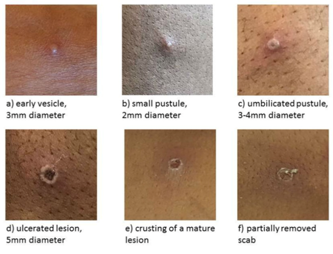
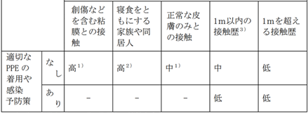

Ⅴ. 疾患別感染対策 13. エムポックス （Mpox）
- 概要
- 病原体：ポックスウイルス科オルソポックスウイルス属エムポックスウイルスに分類される二本鎖DNAウイルスである。低温や乾燥に強いが、エンベロープを有するため、消毒用アルコール、次亜塩素酸ナトリウムが有効である。
- 潜伏期間：5～21日(通常6～13日)であり、この期間中の有症状者との接触を確認する。
- 症状：発熱、頭痛、リンパ節腫脹、筋肉痛などで発症し、発症から1～5日後に皮疹が出現する。皮疹は顔面部を中心に出現し、体幹部、四肢へと広がる。皮疹は、初期は平坦だが、水疱・膿疱化し痂皮化した後、発症から2～4週間で脱落して治癒する(下記写真)。皮疹は口腔、陰部粘膜、結膜や角膜にも生じるが、特に初期は梅毒・麻疹・水痘・手足口病と鑑別難。粘膜症状により肛門痛・直腸出血・排尿困難を来すこともある。

3㎜大の早期水疱 2㎜大の小膿疱 3-4㎜大の陥凹のある膿疱

5㎜大の潰瘍性病変 痂疲を伴う皮疹 痂疲が一部剥がれた皮疹
エムポックスの皮疹(UKHSA.2022)
- 致命率：分類により差があり、クレード1bで10%、クレード2で1％程度とされる。
- 疫学：1970年にザイールで初めて報告された。国内では、欧州でその後エムポックスと診断された者と接触したのち帰国後に発症した成人男性が、国内初めてのエムポックス症例（クレード2b）として2022年7月に報告された。以降断続的な発生はあるが、2024年12月20日現在クレード1のエムポックス症例の報告はない。
- 感染経路：主として性的接触だが、皮疹・痂疲・体液への接触、感染者からの飛沫により感染する可能性がある。
- 感染対策：標準予防策に加え、接触予防策と飛沫予防策をおこなう。エアロゾル発生手技を伴う場合はN95マスクなどを使用する。患者にサージカルマスク着用を指示する。
- 院内感染対策
- 患者発生時の対応(疑い症例の発生時を含む)
- 患者発生を感染制御部(内線5093)へ連絡する。
- 入院患者の場合は個室隔離し、標準予防策に加え、接触予防策および飛沫予防策を開始する。エアロゾル発生手技を伴う場合は、N95マスクなどを使用する。
- 外来患者の場合は感染制御外来の使用について感染制御部(内線5093)と相談する。
- 患者が滞在した環境は、通常の清掃をおこなってから80%アルコールで清拭する。
- 接触者の把握と対応
- 適切な防護具を使用せず体液・血液・痂疲に曝露した場合は、感染制御部(内線5093)へ相談し、以下を参考に曝露の程度を見積もる。リスクが高いと判断された場合、21日間の健康観察を行う。就業制限は特に行わない。エムポックスを疑う症状が出現した場合は速やかに感染制御部(内線5093)へ連絡し、受診を相談する。

- 感染制御部への連絡方法
- 下記時間帯に応じた責任者が、感染制御部(内線5093)、または事務当直(内線5038)を通して感染症内科オンコール医師へ連絡する。
・ 平日8:30～17:00･･･病棟師長、病棟医長、リンクナース/ドクターから感染制御部へ連絡
・ 上記以外の時間帯･･･当該科当直医、病棟看護師リーダーから事務当直へ連絡
- 検査・診断
エムポックスの検査は保険収載されておらず、保健所へ患者検体を提出して行政検査が行われる。疑った段階で、検査をおこなうか感染制御部(内線5093)に相談する。主に採取される検体は以下で、各検体についてPCR検査が行われる。検出感度を上げるために可能な限り複数種類の検体採取が望ましい。
- 痂疲
- 水疱内容液
- 血液
- 鼻咽頭ぬぐい
- 尿
あわせて、同様の症状を呈する他疾患についても検査を考慮する。主に鑑別診断となるのは、梅毒・麻疹・水痘・手足口病などである。
- 治療
自然に軽快する疾患であるため、対症療法が治療の中心となる。特に疼痛が強いため、十分量の鎮痛薬使用を考慮する。
2025年11月時点で特異的な抗ウイルス薬はない。重症例については、特定臨床研究の治療目的で感染症指定医療機関に転院となることがある。
- 隔離期間と隔離解除の基準
ウイルス排出期間は23～50日と報告されている。この期間は感染性があり、隔離を要すると考えられることが多い。
隔離解除の基準は、以下をすべて満たしたときとされる。
- 72時間以上発熱がない
- 過去48時間以内に新しい病変がない
- 口腔内に病変がない
- すべての皮膚病変が痂疲化して、剥がれ落ちた
すべて満たすまでの期間は、概ね3週間程度と見込まれる。
また、自宅での隔離時は、以下を患者・家族へ指導する。
- 免疫不全者・妊婦・12歳未満の小児との接触を控える
- 発症中は他人の肌や顔との接触、性的接触を控える
- 感染者と非感染者の寝具・タオル・食器の共用を避ける
- アルコールなどの消毒剤を使用した手指衛生をおこなう
- すべての痂疲が消失してから原則8週間は性的接触を控え、感染伝播のリスク回避を心がける
- ワクチン
天然痘ワクチンが発症予防や重症化予防に有効とされる研究はあるが、2025年11月時点でワクチンは実用化されていない。なお、種痘の接種記録がある人は、一定の感染予防効果があるとされる。
- 保健所への届け出
感染症法で4類感染症に指定されている。全数把握対象疾患のため、診断した場合は、直ちに最寄りの保健所へ届け出なければならない。届け出に際しては感染制御部(内線5093)へ連絡する。
- 連絡先：
- 平日の時間内(８時３０分～１７時１５分)：感染制御部 内線５０９３
- 上記以外の夜間・休日：感染症内科オンコール
参考文献 2025年11月26日確認
・エムポックス（詳細版） 国立健康危機管理研究機構 感染症情報提供サイト
https://id-info.jihs.go.jp/diseases/a/mpox/010/index.html
・サル痘（Monkeypox）の診療指針 ver. 1.0 (2022年7月8日作成) 国立国際医療研究センター病院 国際感染症センター
https://dcc-irs.jihs.go.jp/document/manual/20220708_monkeypox_manual.pdf?fs=e&s=cl
・2023年度国際感染症セミナー エムポックスの病態・治療について
https://dcc.jihs.go.jp/prevention/seminar/2023/20230529moriokaMpox.pdf
・エムポックス感染者の隔離はどのように終了するのが良い？ ～隔離終了タイミング検証のシミュレータを開発～
https://www.jst.go.jp/pr/announce/20240826-3/pdf/20240826-3.pdf